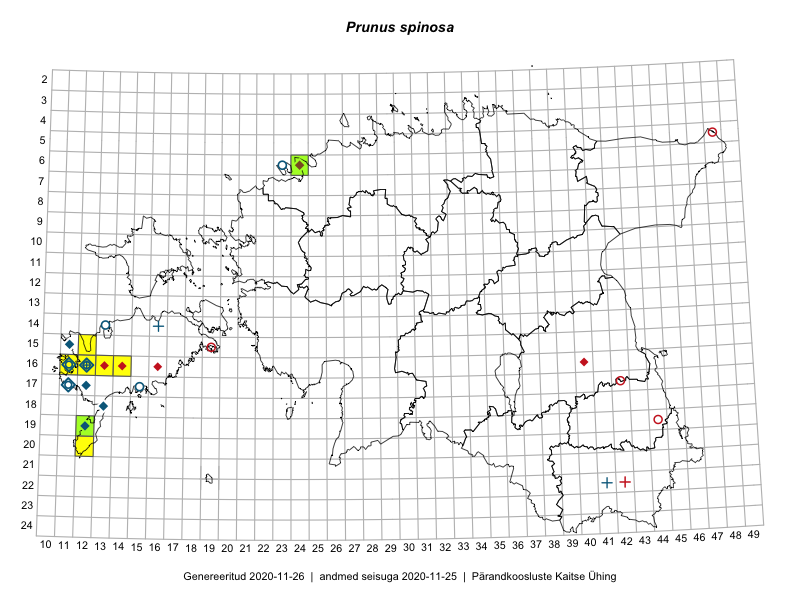

Prunus spinosa — laukapuu
Rosaceae :: Prunus spinosa L. (60)

Kaart põhineb 62 kirjel:
vaatlusi 25
herbaareksemplare 35
PKÜ kirjeid1 1
ELFi kirjeid2 1
Taime kaasaegsed ja ajaloolised leiukohad asuvad 19 ruudus.
Tingmärgid ja ruutude arvud periooditi (U3 / V4 )
█ 2006–2020 (9/–)
◆/◇ 1971–2005 (8/11)
○ 1921–1970 (6/6)
+ kuni 1920 (2/3)
× hävinud (–/0)
? kaheldav (–/0)
| Ruut | Leidja(d) | Leiuaeg | Kirje |
|---|---|---|---|
| 14-13 | 1969-07-28 | ruut/ala: Prunus spinosa L. | |
| 14-13 | Maret Kask | 1948-08-07–1979 | ruut/ala: Prunus spinosa L. |
| 15-11 | M. Reitalu | 1996–1999 | ruut/ala: Prunus spinosa L. |
| 16-11 | botaaniline ekspeditsioon ZBI | 1974-06 | ruut/ala: Prunus spinosa L. |
| 16-11 | Maret Kask, Linda Viljasoo | 1980-08 | ruut/ala: Prunus spinosa L. |
| 16-11 | Mari Reitalu | 1972–2005 | ruut/ala: Prunus spinosa L. |
| 16-12 | B. Saarsoo | 1936-06–1936-09 | ruut/ala: Prunus spinosa L. |
| 16-12 | Mari Reitalu | 1971–2005 | ruut/ala: Prunus spinosa L. |
| 17-11 | B. Saarsoo | 1934-07–1934-10 | ruut/ala: Prunus spinosa L. |
| 17-15 | B. Saarsoo, A. Tomson | 1934–1938 | ruut/ala: Prunus spinosa L. |
| 17-11 | Mari Reitalu | 1971–1998 | ruut/ala: Prunus spinosa L. |
| 18-13 | M. Reitalu | 1995–1999 | ruut/ala: Prunus spinosa L. |
| 19-12 | Mari Reitalu | 1972–1999 | ruut/ala: Prunus spinosa L. |
| 06-23 | Haide-Ene Rebassoo, K. Kalamees | 1955-07-16–1955-07-17 | ruut/ala: Prunus spinosa L. |
| 16-12 | Mari Reitalu, Triin Reitalu | 2015-04-15 | ruut/ala: Prunus spinosa L. |
| 16-12 | Mari Reitalu, Triin Reitalu | 2015-04-15 | ruut/ala: Prunus spinosa L. |
| 16-13 | Mari Reitalu, Oliver Parrest | 2015-05-22 | ruut/ala: Prunus spinosa L. |
| 16-14 | Mari Reitalu | 2014-07-21 | ruut/ala: Prunus spinosa L. |
| 16-13 | Mari Reitalu, Oliver Parrest | 2015-05-22 | ruut/ala: Prunus spinosa L. |
| 16-13 | Mari Reitalu, Oliver Parrest | 2015-05-22 | ruut/ala: Prunus spinosa L. |
| 19-12 | Oliver Parrest | 2015-05-17 | ruut/ala: Prunus spinosa L. |
| 20-12 | Oliver Parrest, Mari Reitalu | 2015-05-26 | ruut/ala: Prunus spinosa L. |
| 21-19 | Silvia Pihu | 2015-07-02 | ruut/ala: Prunus spinosa L. |
| 15-12 | Mari Reitalu | 2006-09-13–2006-09-21 | ruut/ala: Prunus spinosa L. |
| 15-12 | Mari Reitalu | 2006-09-19 | ruut/ala: Prunus spinosa L. |
| 16-11 | Ü. Kukk | 1982-07-06 | TU252992: Prunus spinosa L. |
| 16-11 | H. Koppel | 1934 | TU252995: Prunus spinosa L. |
| 16-11 | K. Eichwald | 1931-08-09 | TU252996: Prunus spinosa L. |
| 16-11 | K. Eichwald | 1931-08-09 | TU252997: Prunus spinosa L. |
| 16-12 | Albert Üksip | 1927-06-30 | TU252998: Prunus spinosa L. |
| 16-12 | Albert Üksip | 1933-07-12 | TU252999: Prunus spinosa L. |
| 16-12 | Albert Üksip | 1933-07-12 | TU253000: Prunus spinosa L. |
| 16-12 | Albert Üksip | 1927-06-30 | TU253001: Prunus spinosa L. |
| 16-11 | T. Lippmaa | 1933-08-05 | TU253002: Prunus spinosa L. |
| 17-11 | B. Saarson | 1933-07-31 | TU253003: Prunus spinosa L. |
| 16-11 | K. Eichwald | 1931-08-09 | TU253004: Prunus spinosa L. |
| 22-41 | H. Hiir | 1890-05 | TU253006: Prunus spinosa L. |
| 16-11 | K. Eichwald | 1933-07-14 | TU253007: Prunus spinosa L. |
| 16-11 | A. Vaga | 1933-07-14 | TU255419: Prunus spinosa L. |
| 16-12 | Mari Reitalu | 1979-05-20 | TU265473: Prunus spinosa L. |
| 16-12 | Mari Reitalu | 1980-05-20 | TU265474: Prunus spinosa L. |
| 16-12 | Mari Reitalu | 1979-05-20 | TU265475: Prunus spinosa L. |
| 16-12 | Mari Reitalu | 1979-05-20 | TU265574: Prunus spinosa L. |
| 16-12 | Mari Reitalu | 1979-05-20 | TU265575: Prunus spinosa L. |
| 16-11 | Maret Kask, Linda Viljasoo | 1980-08-09 | TAA0015055: Prunus spinosa L. |
| 16-12 | A. Puusepp | 1973-06-26 | TAA0015059: Prunus spinosa L. |
| 16-12 | Ants Roos | 1974-06-13 | TAA0015061: Prunus spinosa L. |
| 16-12 | Ants Roos | 1974-06-13 | TAA0015062: Prunus spinosa L. |
| 12-26 | Toomas Kukk | 2000-08-26 | TAA0015078: Prunus spinosa L. |
| 12-27 | J. Elliku | 2000-10-10 | TALL A¤V264: Prunus spinosa L. |
| 16-11 | Aleksei Paivel | 1954 | TALL A005297: Prunus spinosa L. |
| 19-12 | Jüri Elliku | 1983-06-06 | TALL A005292: Prunus spinosa L. |
| 16-12 | Rudolph Lehbert | 1900-06-21 | TAM0060157: Prunus spinosa L. |
| 16-12 | Rudolph Lehbert | 1900-06-21 | TAM0060158: Prunus spinosa L. |
| 21-19 | Silvia Pihu | 2015-07-01–2015-07-05 | TU309701: Prunus spinosa L. |
| 19-12 | U. Ramst | 2008-06-23 | TAM0126905: Prunus spinosa L. |
| 19-12 | U. Ramst | 2008-06-23 | TAM0126906: Prunus spinosa L. |
| 06-24 | Olev Abner | 2007-07-07 | TALL A010610: Prunus spinosa L. |
| 16-11 | Ellen Vilbaste | 1968-07-23 | TAA0115365: Prunus spinosa L. |
| 16-11 | T. Lippmaa | 1933-08-05 | TU255886: Prunus spinosa L. |
| 16-11 | Rein Kalamees, Meelis Pärtel | 1993-08-22 | ELF: 6804 |
| 03-34 | 2008-07-31 | PKÜ: 14893 |
Pärandkoosluste Kaitse Ühingu (PKÜ) andmebaas sisaldab inventeeritud koosluste kirjeldusi ja liigiloendeid. Kõige enam on andmeid niidutaimede kohta.↩︎
Eestimaa Looduse Fondi (ELF) andmebaas sisaldab inventeeritud koosluste kirjeldusi ja liigiloendeid. Eriti rohkesti on andmeid märgalade kohta.↩︎
Ruutude arv uue atlase andmekogu järgi. Muuhulgas arvestab vanemat herbaariumi, 2005. aasta atlase välitöölehtedelt uuesti digitaliseeritud andmeid jne. Uue atlase andmekogust pärinevad andmed on kaardile kantud siniste sümbolitega.↩︎
Ruutude arv 2005. aasta atlase (Kukk, T., Kull, T., Eesti taimede levikuatlas. Eesti Maaülikool, Põllumajandus- ja Keskkonnainstituut, Tartu, 2005) järgi. Andmeallikana on kasutatud levik.exe programmi, kus igas ruudus on registreeritud vaid uusim leid. Seetõttu on vanemate perioodide kohta andmed puudulikud. Kasutatud levik.exe andmestikus leidub mõningaid kõrvalekaldeid atlase trükis ilmunud versioonist, sagedamini tarnade ja käpaliste seas. Lisaks leidub selles andmestikus valik liike (peamiselt väheste leidudega tulnuktaimed), mille kaarte trükis ei avaldatud. Vana atlase andmed ruutudest, milles ei ole uue atlase andmekogus leide enne 2006. aastat, on kaardil esitatud punaste sümbolitega. Vana atlase andmetel hävinud ja kaheldavaid leiukohti pole hilisemate (taas)leidude põhjal korrigeeritud.↩︎